Follow @bernardozamora.art
Follow @bernardozamora.art

Look behind the curtain!
For thousands of years, humans have tried to understand the rules that govern our universe, and created the 'language' and tools of mathematics to describe what we found. These formulas and algorithms, when given color, texture, and light, reveal beautiful patterns that are normally hidden from view.
Below are some of the images featured in an upcoming book. All are original,
mathematically accurate renderings of equations that describe our universe.
None were created using AI.
A visual journey through the mathematics that explains our universe!
Be the first to know
A book is coming with these (and hundreds more images). Get notified when it is available.
No spam. Only book updates, and final email when the book is out.
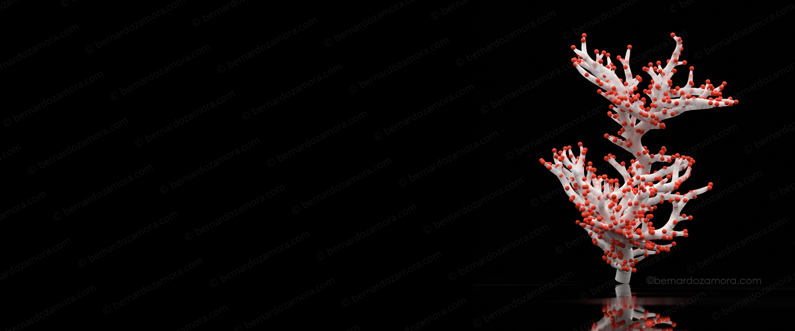
The Collatz conjecture states that taking any number and applying two specific formulas repeatedly will always result in the number 1. This plate shows the first 5000 numbers, converging to 1 at the bottom.
Watch it move on Instagram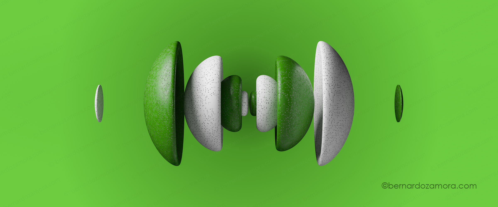
Electrons are three-dimensional wavefunctions defined by the Schrödinger equation. This isosurface shows a hydrogen orbital state, with colors representing the positive and negative mathematical phases.
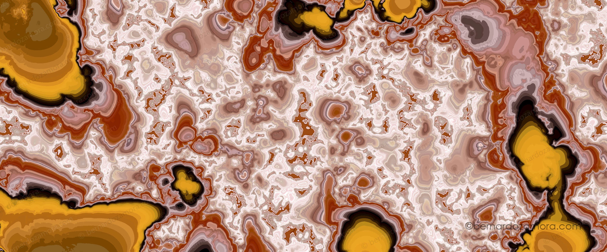
Layering several levels of 'mathematical noise' creates natural-looking patterns resembling clouds or marble. This is calculated by summing noise at different amplitudes and frequencies.
Watch it move on Instagram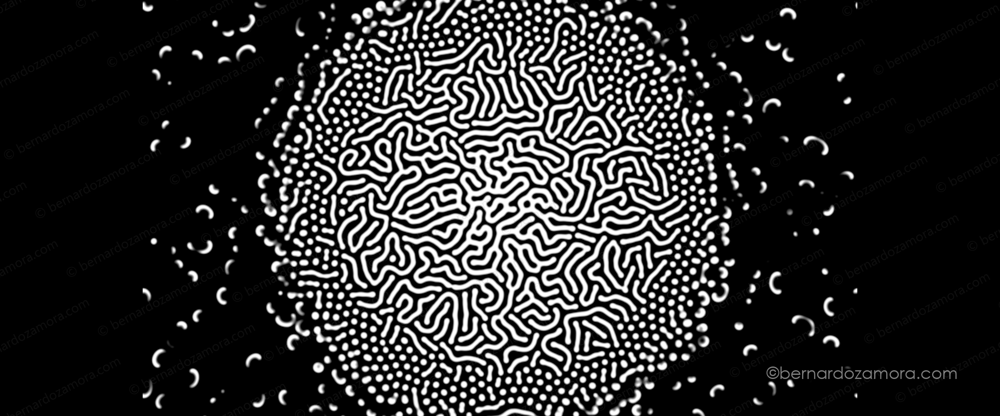
Two chemicals of different concentrations react. As they diffuse, they produce these organic patterns, which are calculated using two partial differential equations.
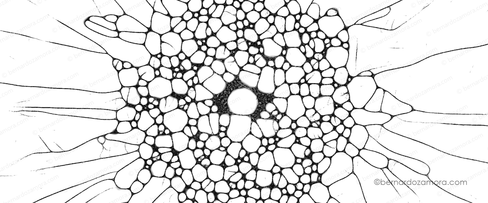
The brainless slime mold Physarum Polycephalum optimizes its path without central control. This plate simulates this behavior with custom parameters that define how particles follow simulated pheromone trails.
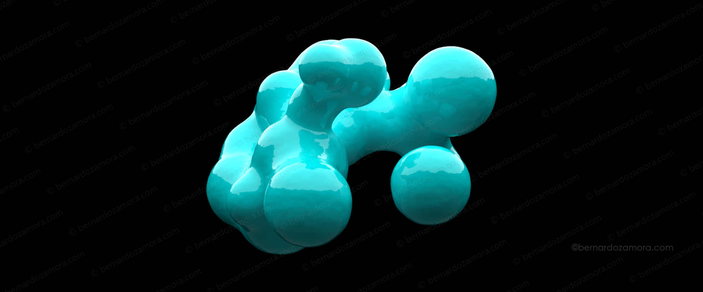
Any point in space 'feels' the gravity from nearby objects. If one views all points with the same gravitational 'pull' in a space with many planets, you get a three-dimensional "gravitational equipotential" surface.
Watch it move on Instagram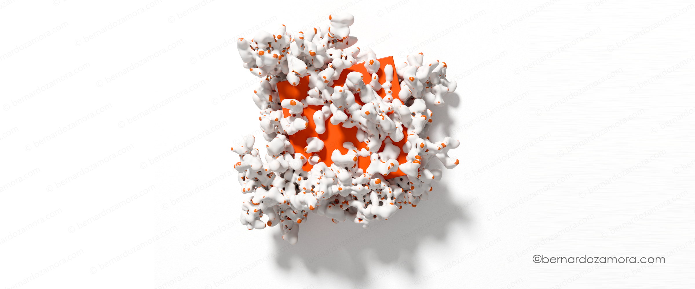
Coral, fungi and root growth are emulated with a technique where connected points pull toward their neighbors but push away from crowded areas, with new points sprouting wherever space opens up.
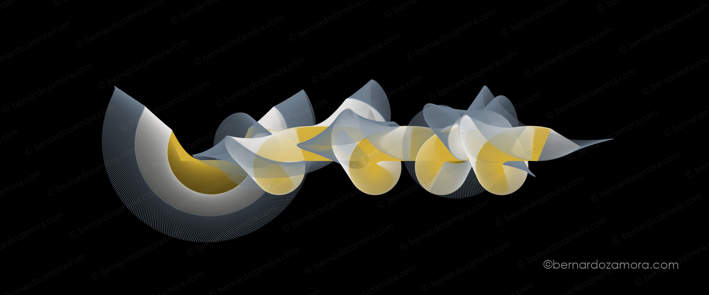
A triple pendulum follows simple physical rules, yet with no friction its movement is completely chaotic. This simulation captures the wakes left behind a triple pendulum as it moves.
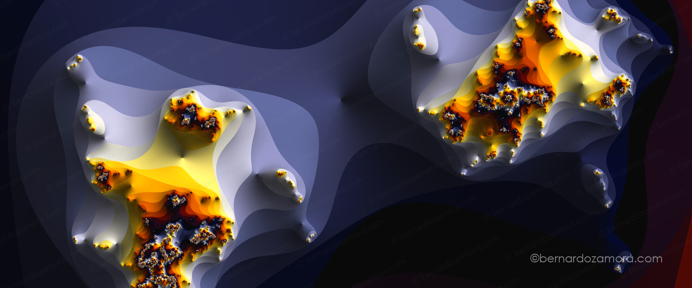
The Manowar Julia is an escape-time fractal born from simple, repeated feedback loops operating on complex numbers. The distinct striped palette charts the precise speed at which each coordinate escapes toward infinity.
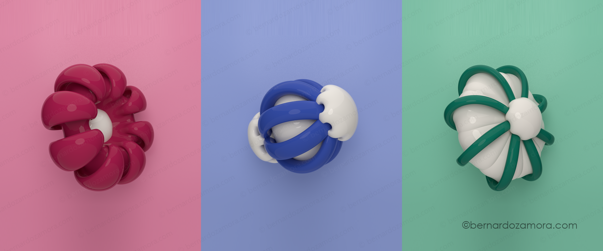
In topology, a sphere can be turned inside out without tearing, puncturing, or sharp creases. This piece captures three snapshots of that geometric transformation, showing different stages of this complex topological process.
Watch it move on Instagram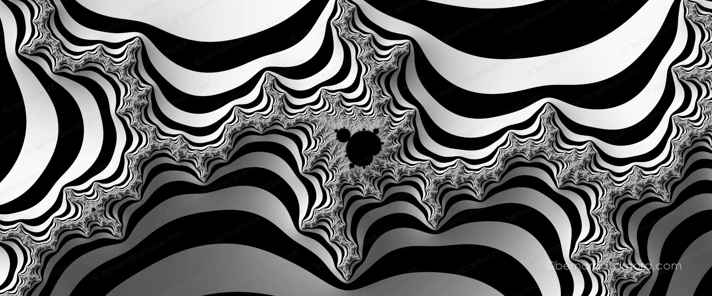
The set consists of complex numbers whose value stays bounded when a specific formula is applied repeatedly. This image shows a section of this chaotic set, in black and white stripes.
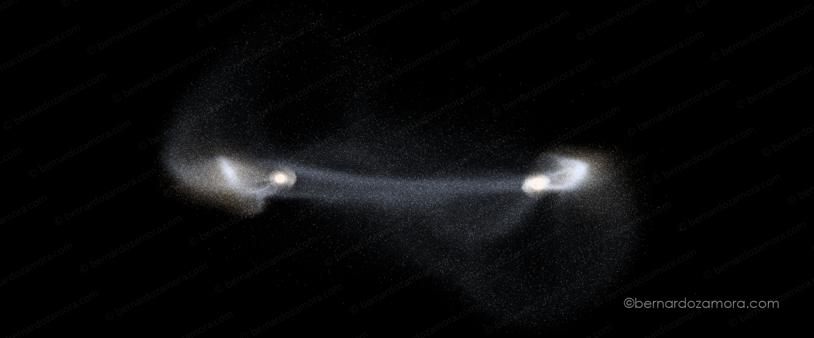
Our Milky Way and the Andromeda Galaxy are moving toward each other at ~246,000 mph. A possible outcome is a side-collision, and this simulation of 16 million stars shows their positions in 425 million years.
Watch it move on InstagramVisualizing equations with complex numbers require adding colors or showing only part of the result. This image plots the complex function (z+1i)/(z-1i) using 'Domain coloring'.
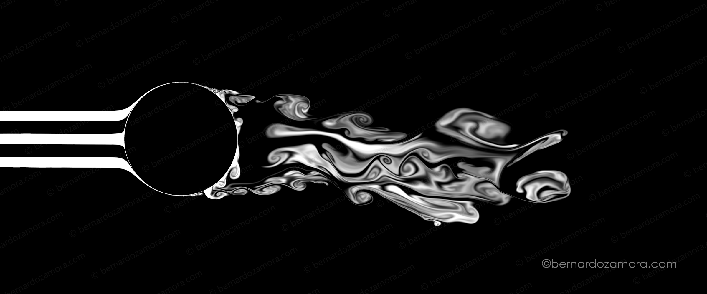
When a gas moves past a solid object, it can result in a swirling turbulent pattern or a calmer 'laminar flow' depending on the speed and viscosity. This image is the result of 40 trillion calculations.
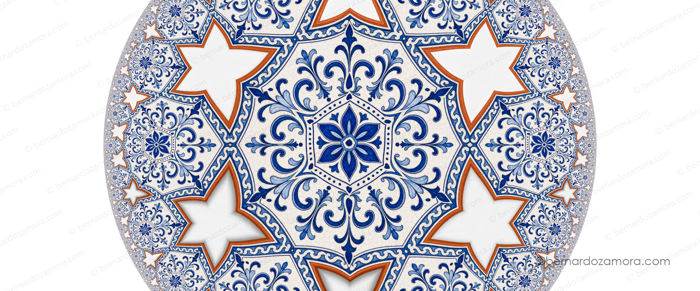
In hyperbolic geometry, a plane can infinitely be tiled with a repeating shape. This plate is based on an intricate, Mexican Talavera-style ceramic pattern, projected on a Poincaré disk.
Watch it move on Instagram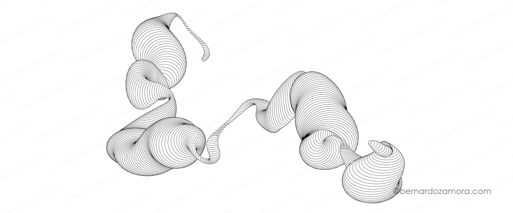
While complete randomness exists at the quantum level, nature frequently uses 'smooth' randomness, like the rolling contours of terrain. This organic flow is created using 'Perlin noise'.
Described by Felix Klein in 1882, the Klein Bottle has no volume, and its true form exists in four dimensions. Rendered in crystal with amber liquid.
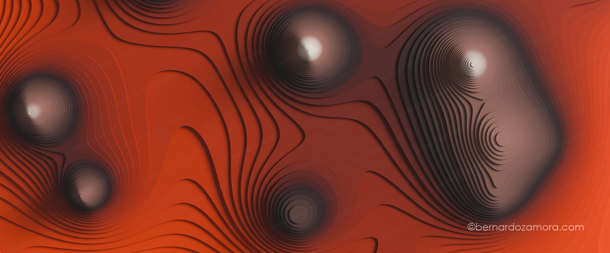
Gravity twists space into invisible hills and valleys. This plate shows the gravitational pull around several planetary masses as 'heights', helping see the hidden geometry of planetary gravitational attraction.
Watch it move on Instagram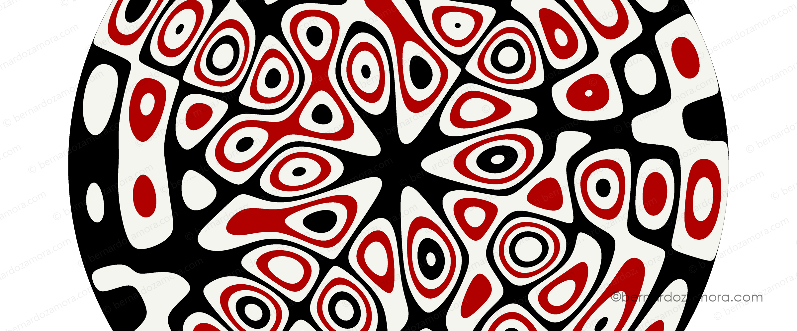
When a metal plate is vibrated at a resonant frequency, it generates geometric Chladni patterns. This render of a Chladni plate is color-coded based on the vibration magnitude.
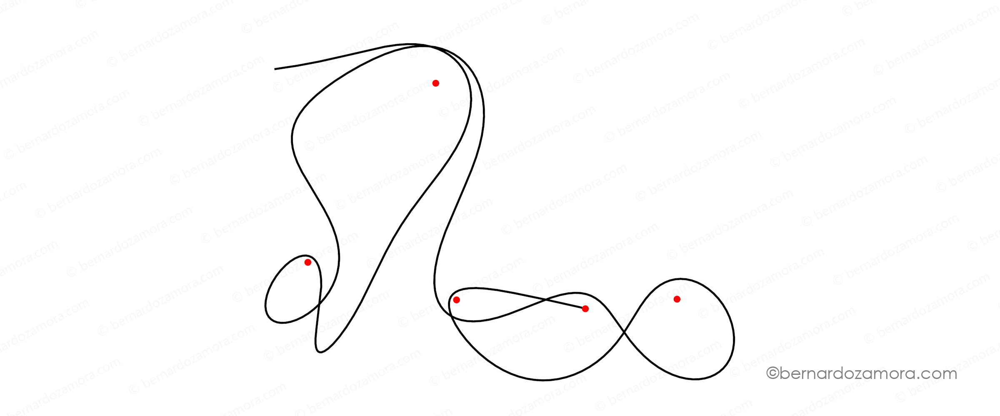
The path of an object attracted to several planets is highly chaotic. This plate illustrates the path an object takes before colliding with a planet, inadvertently creating the silhouette of a person lying down and looking up.
Watch it move on InstagramConway's Game of Life uses just four simple local rules to generate complex, organic behavior. This image captures several of generations evolving over time, extruded into voxel-based 3D structure.
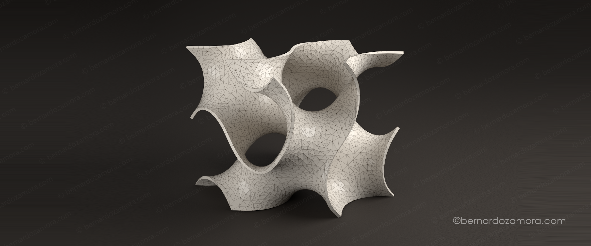
The gyroid is a triply periodic 'minimal surface' that twists without ever intersecting itself. It contains zero straight lines or flat planes, and every point on this shape forms a perfect saddle.
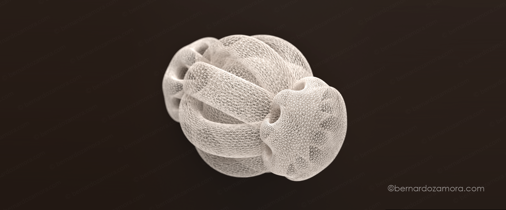
In topology, a sphere can be turned inside out without tearing, puncturing, or sharp creases. This piece captures a snapshot of that geometric transformation, exposing the intricate self-intersections of the surface.
Watch it move on Instagram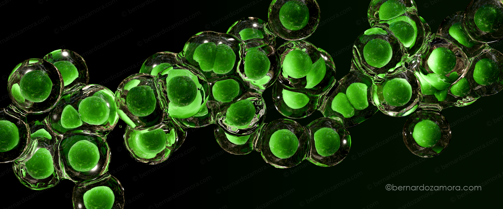
Purely random fluctuations are believed to govern quantum events. By assigning random values to position, scale, and surface displacement, and scattering them along a path, it manifests as a microscopic-looking cell.
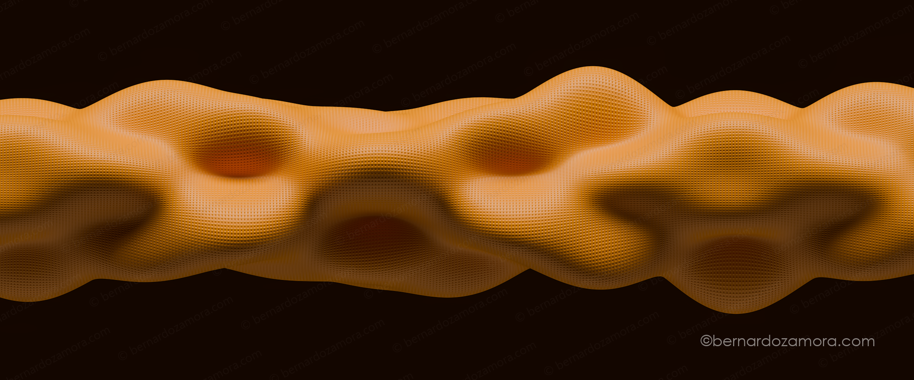
Sound travels as waves through a physical medium. This plate visualizes the wave interference created by sending two distinct frequencies from opposite ends of a cylindrical space.
Watch it move on Instagram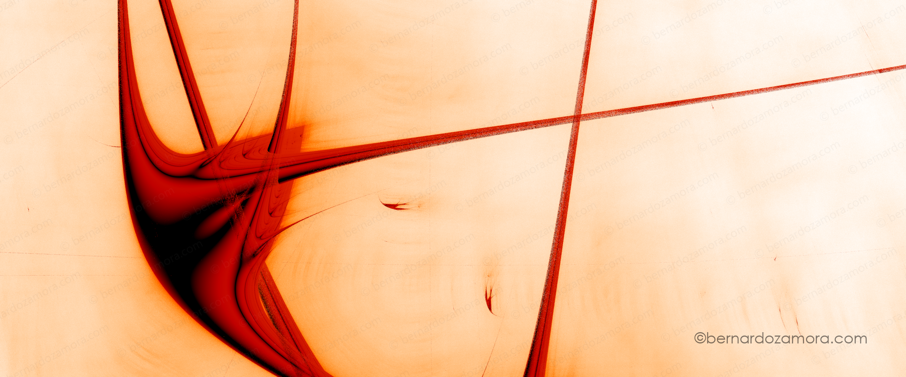
Lyapunov diagrams map how chaotic and turbulent or stable is each region of a fractal. This plate showcases a section of the Lyapunov diagram for the Ikeda strange attractor.
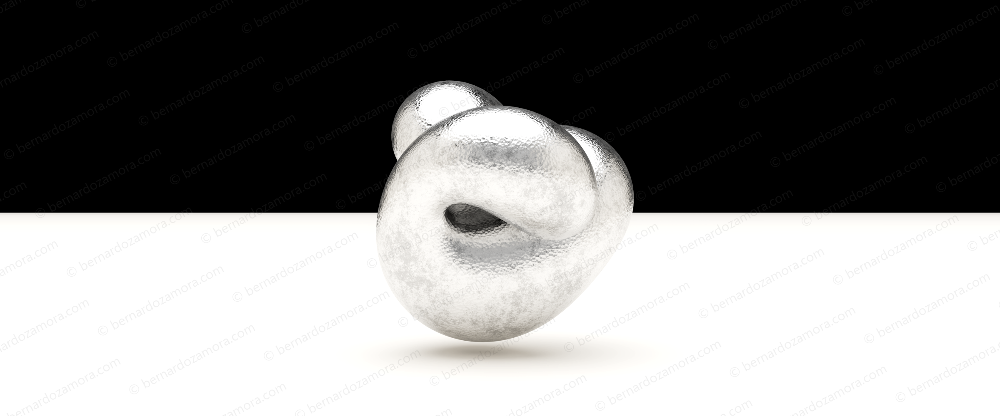
Boy's surface is a classic example of a non-orientable surface embedded in three dimensions, visualized here as hammered metal.
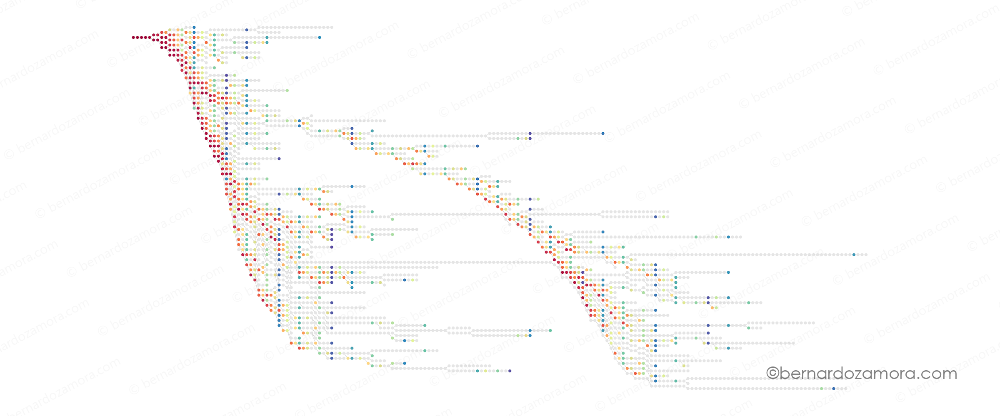
The Collatz conjecture states that taking any number and applying two specific formulas repeatedly will always result in the number 1. All numbers tested so far have ended up in 1. This plate shows numbers converging to 1.
Watch a larger version shown in 3D in Instagram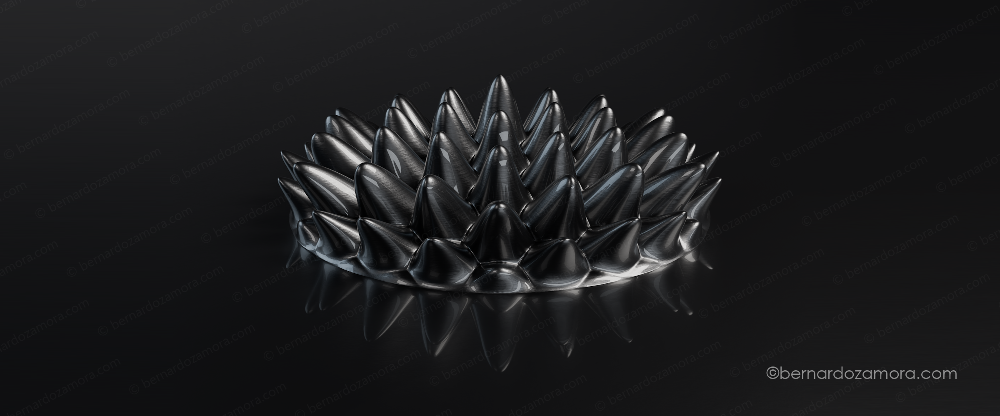
Ferrofluids are liquids packed with tiny magnetic particles. When exposed to a magnetic field, Ferrofluids undergo a 'Rosensweig instability,' which renders visible and otherwise invisible magnetic field.
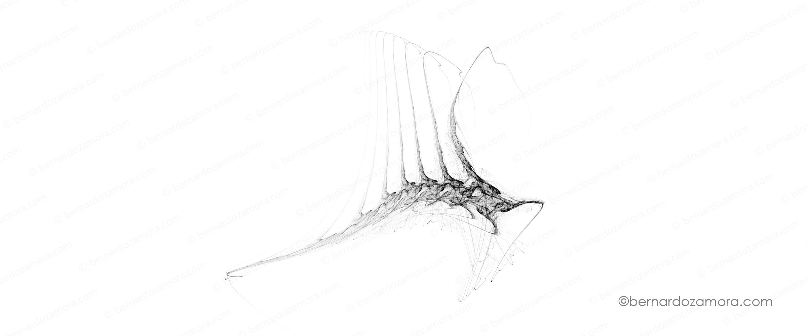
An Iterated Function System takes an initial point and repeatedly applies a function, plotting all intermediate points. After millions of iterations, we obtain highly complex organic-like structures.
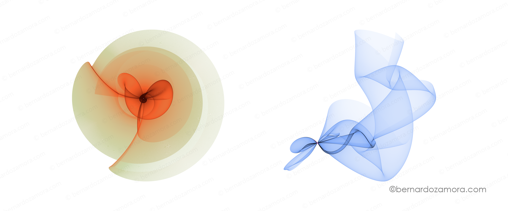
Just as a star's massive gravity warps the fabric of space to bend light, these images rely on a similar mathematical logic. They take a flat plane of 200 million points and warp them through two equations.
Watch it move on Instagram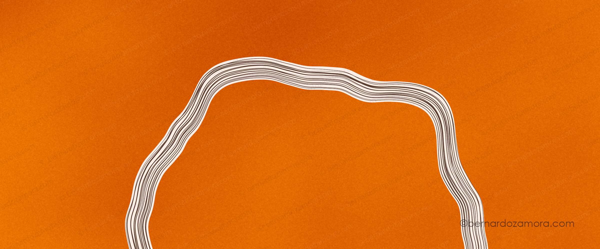
This plate utilizes Fractional Brownian Motion (fBm), 'noise with memory', layering hundreds of distinct fBm values at varying scales and frequencies to generate the line patterns.
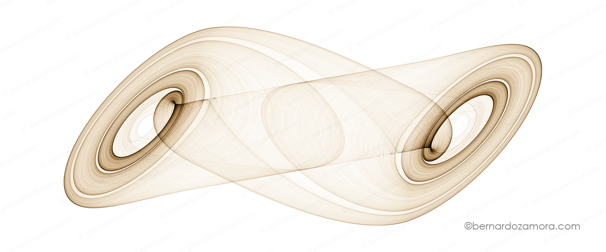
Chua’s circuit is a simple electronic system with chaotic behavior. Three equations describe the oscillating electrical signal loops, creating a double scroll attractor, winding but never repeating its path.
Watch other strange attractors on Instagram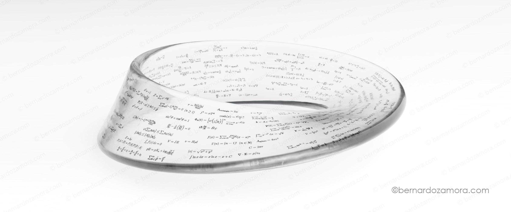
A Möbius strip is a topological wonder created by giving a ribbon a single half-twist and joining the ends, resulting in a continuous surface with only one side and one edge. This plate highlights that endless geometry.
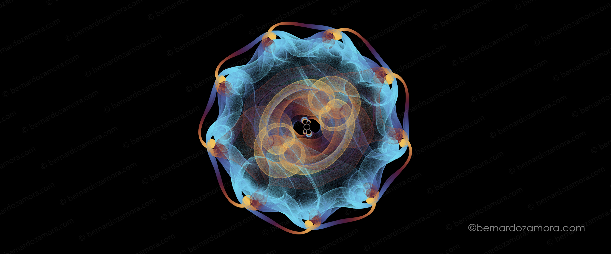
A polynomial equation has as many roots (zeroes) as its highest degree. This plate maps the roots of an 8th-degree polynomial across millions of small variations, weaving them into a striking, multi-colored tapestry.
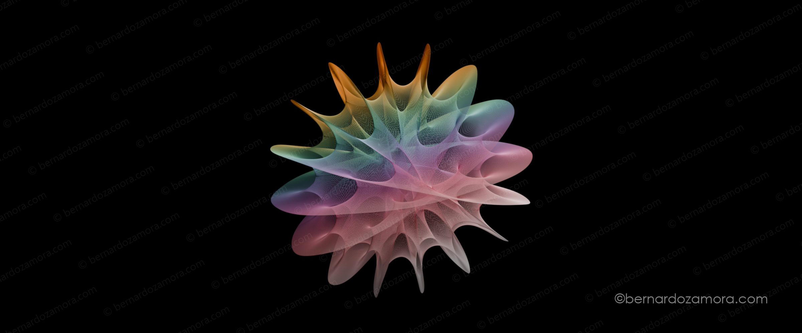
String theory states that the building blocks of the universe are tiny, vibrating strings, with six dimensions, represented by Calabi-Yau manifolds. This image visualizes a shadow of an 8-dimension structure.
Watch it move on Instagram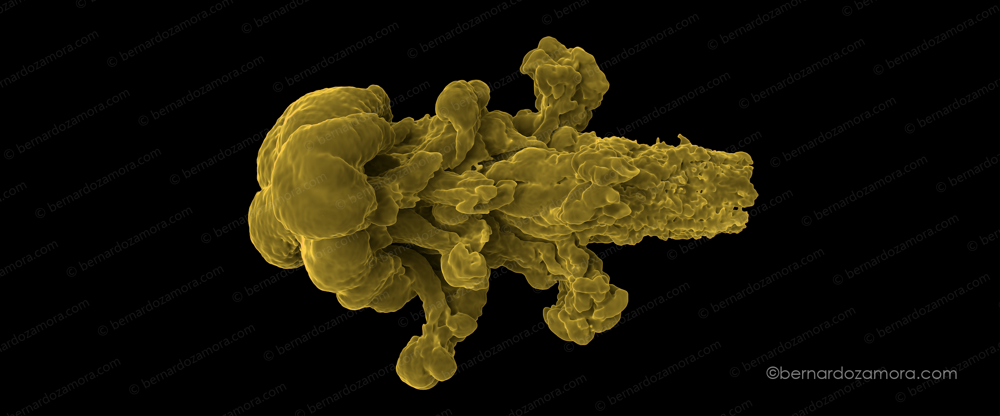
The complex, turbulent curls of rising smoke are explained by the Navier-Stokes equations. These are the foundational laws of fluid dynamics. This plate is the result of simulating several seconds of gas flow.
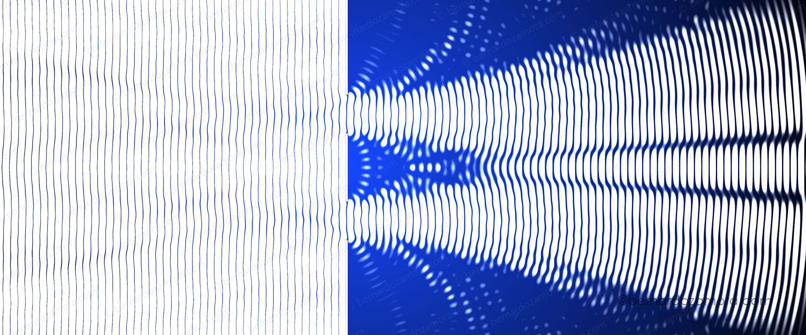
The double-slit experiment shows that particles behave like a wave, creating overlapping ripples of interference. The moment a particle is watched, the wave collapses and it acts like a solid object.
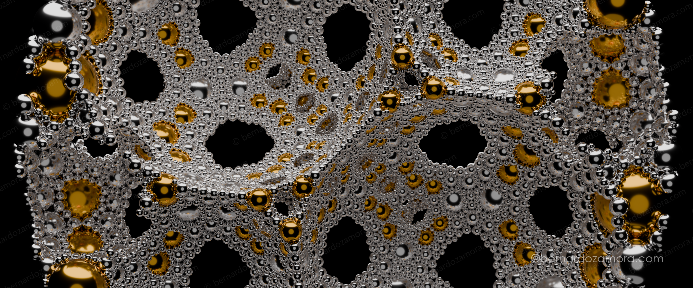
Take a hollow sphere, place 4 smaller spheres inside touching each other and the outer shell. Keep adding ever smaller spheres in every empty space. This plate shows the resulting intricate geometry.
Watch it move on InstagramBe the first to know
A book is coming with these (and hundreds more images). Get notified when it is available.
No spam. Only book updates, and final email when the book is out.